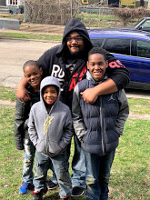

 
 
<!DOCTYPE html>
<html lang="en">
<head>
    <meta charset="UTF-8">
    <meta name="viewport" content="width=device-width, initial-scale=1.0">
    <title>Document</title>
</head>
<body>
    <!-- Complete the following steps. Once you are done create a new repository in github, deploy this file to github and send a link to the project in Google Classroom-->
    <!-- 1. add an H1 tag with your name (hint try using emmet by typing H1 and hit tab) →
 
 
 
    <!-- 2. Add a photo of yourself below your h1 heading  -->
 
    <!-- 3. Below your photo add an h2 tag with a caption that describes the photo. The size won't' make sense for a caption but we will edit this later with CSS  -->
 
    <!-- 4. Below your link create an unordered list with multiple list items in it. The list items should include a timeline about you, facts about you, or you can have two lists that include both. -->
 <ul>
     <li></li>
 </ul>
   <!-- 5. Add a link at the bottom of your page that links to your linkedIn account.  -->
 
    <!-- 6. If you want to go above and beyond and extra flourishes to you page, that would be encouraged and celebrated! -->
 
    <!-- 7. Deploy this page to  your github and submit thze link to your repository. Make sure that everything works on Liver Server before you deploy your page!  -->
 
    <!--  -->
</body>
</html>
<h1>jerome barefield</h1>

<h2>me and my boys </h2>
<ul>
    <li>steelers fan</li>
    <li>born in 1988</li>
    <li>mma fan</li>
    <li>married</li>
    <li>a libra</li>
    <li>5 kids</li>
    <li>hate the bengals</li>
    <li>need to make ends meet</li>

</ul>


  

